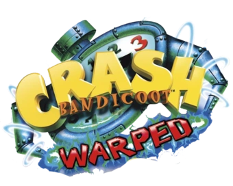

Crash Bandicoot: Warped
Crash Bandicoot: Warped es un videojuego de plataformas desarrollado por Naughty Dog para PlayStation. El juego sirve como una secuela de Crash Bandicoot 2: Cortex Strikes Back. Fue la última serie platinum de la serie desarrollada por la compañia Naughty Dog, que posteriormente desarrolló Crash Team Racing.
La historia se centra en Crash y Coco Bandicoot y su misión es recoger los cristales dispersos a través del tiempo antes de que sus enemigos los consigan. Warped fue el primer juego de la serie Crash Bandicoot en tener la función de desbloquear una demo de Insomniac Games, Spyro the Dragon. Esta función se prolongaría hasta el videojuego Crash Bash.
Crash Bandicoot 3: Warped ha recibido comentarios positivos de los principales críticos y ha vendido 5.7 millones de copias a partir del 9 de julio de 2002. El juego se convirtió en el noveno juego más vendido de la historia de PlayStation. A pesar de ser originalmente disponible para jugar en la PlayStation, fue lanzado para descargar tanto en la PlayStation Portable y PlayStation 3 el 7 de febrero de 2008, a través de PlayStation Network.
Es generalmente considerado por la crítica y por la prensa especializada como uno de los mejores Crash jamás creados. Cabe señalar, que después que la compañía creadora abandonara la elaboración de los juegos de Crash (Naughty Dog), la saga fue decayendo. Es por este motivo que sus primeras cuatro aventuras para la consola PlayStation son las mas jugadas y queridas por los fans, casi consideradas un clásico.
Al igual que anteriores entregas de la serie Crash Bandicoot, Warped consta de dos modos principales de juego: una Warp Room (desde Crash Bandicoot 2: Cortex Strikes Back) y los niveles (desde Crash Bandicoot). El centro de la sala se llama Warp Room o Sala de Teletransporte, y se divide en cinco áreas, cada uno con cinco niveles y un jefe de lucha. Inicialmente, sólo una zona en el centro es accesible, pero se van abriendo más salas según se vaya completando. Además del principal modo de juego de "seguir el camino" visto en anteriores juegos de la serie, aparecen otros modos, como subirse a un biplano, una moto de agua, un bebé dinosaurio, un tigre y una carrera en moto se pueden ver en este juego. Otra nueva característica es la capacidad de adquirir nuevas habilidades al derrotar a un jefe. El juego también hace uso intensivo de la función DualShock, utilizando el efecto de vibración con frecuencia
El juego
Hay un total de 32 niveles en Crash Bandicoot 3: Warped, con excepción de los 5 jefes y los dos niveles que tiene dos entradas diferentes. Hay niveles basados en la Edad Media,Bajo el mar (La Atlantida), China, La Prehistoria, El Océano Pacifico, Arabia Saudita, Carreras en Motocicleta, el Antiguo Egipto,el Futuro, y el Cielo durante la Primera Guerra Mundial. Los niveles que tienen lugar en la Edad Media están poblados de hechiceros, caballeros chivos, gigantes de 2 cabezas y ranas que se convierten en príncipes si besan a Crash. Los niveles basados en la Prehistoria tienen lugar en cuevas subterráneas. Crash dispondrá de un cría de Tyrannosaurus Wrecks que puede montar y ayudarlo a superar el nivel. Abundan también los pterodáctilos y un triceratops gigante que tratará de aplastar a Crash por todos los medios, geisers ardientes, peces bandicoots, hombres que trataran d ahogar a Crash y fosos de lava.Los niveles de Arabia Saudita se llevan a cabo en los balcones de dicha región, en la cual abundan genios, espadachines, espadachines que lanzan cuchillos, monas con jarrones, hombres que tiran fuego y escorpiones. Los niveles del Antiguo Egipto se ubican en la etapa de mayor apogeo de las pirámides y faraones. Están poblados de momias, Momias con púas, monas en jarrones que arrojaran agua, faraones con lanzallamas, faraones que dejan caer grandes bloques de piedra que aplastaran a Crash si esta debajo del bloque de piedra,flechas ubicadas en las paredes, lanzas que salen del suelo, cocodrilos,escarabajos y cobras. Los niveles que tienen lugar en el Futuro se centran en la ciudad "Neo York", una ciudad bajo el dominio de Cortex que cuenta con sofisticados cañones, láseres, campos de fuerza y plataformas móviles. Los niveles que se centran en las carreras de motocicletas, tienen lugar en carreteras de los años 50 de Estados Unidos, donde Crash deberá competir con otros corredores para conseguir cristales, evitando a los precipicios y a los policías. Los niveles que tienen lugar en los cielos de Europa durante la Primera Guerra Mundial se centrarán en destruir a los dirigibles y aviones de Cortex. Los niveles que se sitúan en la Atlántida se dividen en dos tipos diferentes: las del primer tipo en la que Crash deberá bucear y sortear tiburones, anguilas, discos eléctricos, remolinos, minas y peces globo y las del segundo tipo, en la que Coco, a bordo de una moto de agua, deberá evitar a tiburones, gaviotas,hombres en lancha que si Coco choca con el le dará un golpe en la cabeza hundiéndola,bombas, piratas con anclas y barcos que arrojan cañones. Los niveles que se recrean en la Gran Muralla China, Coco, a lomos de una cría de tigre deberá avanzar y evitar diferentes obstáculos, como barriles, hombres trabajando, precipicios y dragones chinos. La Gran Muralla China supone uno de los escenarios del juego.Las cajas son un elemento muy importante en el juego, y se pueden romper con todas las habilidades que posee Crash.
La mayoría de las cajas en el juego contienen frutas Wumpa, que dan al jugador una vida si se consiguen 100 frutas Wumpa (las normales, las que tienen un signo de interrogación (?) y las rayadas en las que tendrás que saltar 5 veces para obtener 10 frutas Wumpa).
Las cajas con la cara de Crash contienen una vida extra.
Las cajas reforzadas también contienen frutas Wumpa. Estas solo pueden ser destruidas con el Súper Planchazo al derrotar a Tiny Tiger.
Las cajas con las flechas apuntando hacia arriba (de madera o metal) servirán para impulsar a Crash mas de lo que podría conseguir un salto convencional. Las de madera podrán contener frutas Wumpa o vidas extra. Las de metal son irrompibles.
Las cajas con un signo de exclamación (!) hacen que se produzcan variaciones en el nivel, como que se activen plataformas móviles o aparezcan cajas extra.
Las cajas con un signo de exclamación (!) verde destruye todas las cajas nitro.
La caja con la cara de Aku Aku ayudará a Crash a ser inmune a los ataques enemigos. Si se reúnen tres máscaras simultáneamente, Crash se volverá invencible temporalmente, aunque desaparecerá si se cae por un precipicio.
Algunas cajas cambian de icono a medida que el jugador se acerca y la recompensa que se obtendrá dependerá del momento en que rompa la caja. Si la caja no se rompe en el tiempo fijado, se volverá en acero, irrompible.
Las cajas de verificación (viene con una letra "C", tanto de madera como de metal) permiten un punto de partida (Check Point) en el nivel según donde se haya roto la caja. Si hay varias cajas de verificación en el nivel, Crash volverá a la última que haya roto.
Las cajas TNT se rompen a los 3 segundos de haber saltado sobre ellas, si se intenta romper directamente, Crash morirá.
En cambio, las cajas Nitro explotan con el simple contacto físico. Todas las cajas Nitro de cada nivel se pueden romper al mismo tiempo al final del nivel con una caja verde y un signo de exclamación (!).
Las cajas de metal son irrompibles aunque sirven de plataformas en algunos niveles.
Las cajas amarillas numeras con el 1,2 y 3 (solo en el modo contrarreloj) detendrán el reloj por unos segundos.
Cada nivel contiene un cristal, una reliquia y una o dos gemas, con exclusión de los jefes finales. Los niveles secretos no contienen cristales. Es fundamental recoger todos los cristales (25) a lo largo del juego para poder ganar. Los cristales generalmente se encuentran cerca del final de cada nivel. Las reliquias se reciben por completar con éxito las contrarreloj.. Hay 30 reliquias a lo largo del juego. Las gemas se reciben por romper todas las cajas en un nivel. Además, algunos niveles contienen gemas de color, que se reciben cuando se ha completado un nivel secreto y desbloquean unas plataformas de colores que te llevan a lugares secretos de un nivel. Cada gema de color desbloquea la plataforma de su color. Las piedras preciosas que contienen niveles se obtienen por completar una tarea, como ganar una carrera. Las gemas no son beneficiosas, pero son necesarias para conseguir el 105% del juego. Hay un total de 45 gemas en Warped, pudiendo completar el juego en su totalidad al 105%.
Contrarreloj
Además, el juego presenta un nuevo modo, Contrarreloj, un nivel que debe ser completado en el menor tiempo posible. Las cajas se establecen a lo largo de los niveles que están en condiciones de congelación para uno, dos o tres segundos. Un zafiro o reliquia de oro será ganada si el tiempo es igual o menor al establecido en cada nivel. Una reliquia de platino se puede recibir antes de completar el juego con un 105%, pero a veces sólo se ve en el cuadro de información de nivel si Cortex vence al menos una vez. Completar el juego con un 105% permite la segunda y última batalla con Cortex, si es derrotado, se desbloquea una alternativa final.
Las reliquias desbloquean niveles secretos que son accesibles a través de la Warp Room. Por cada cinco reliquias que se recogen, un nivel secreto es desbloqueado. Sin embargo, después de recoger las 25 reliquias y desbloquear el último nivel secreto, no se desbloquean mas niveles secretos, independientemente de cuantas reliquias se ganen.
Poderes
Cuando Crash derrota a un jefe es recompensado con un poder que le ayudará a avanzar en los siguientes niveles:
- Planchazo (pulsando X+○): Esto le permite a Crash romper cajas especialmente fuertes.
- Doble salto (pulsando X+X): Hace que Crash salte el doble de alto.
- Ataque torbellino (pulsando cuadrado (□) repetidamente): Crash hace el tornado durante más tiempo, permitiéndole también planear.
- Bazuca de frutas (mantén L2 y ○ para disparar): Útil para eliminar enemigos desde una distancia prudencial.
- Botas rápidas (manteniendo pulsado R2): Ayudará a Crash a correr el doble de rápido, permitiéndole pulverizar récords.
Reliquias
Ahora, en Crash Bandicoot 3: Warped hay reliquias. Para ello, el jugador debe estar en modo contrarreloj y ganar según el tiempo que esté estipulado cada nivel. Hay tres tipos:
- Zafiro: Se obtiene venciendo el tiempo fijado por el nivel. (Despues de obtener el Cristal)
- Oro: El jugador hace un tiempo inferior al fijado por el zafiro.
- Platino: El tiempo debe ser bastante inferior al fijado por el oro. Es el más difícil de conseguir.Se pueden saber los tiempos únicamente teniendo el 105%.
A partir de conseguir cinco reliquias, aparecerá en la parte central de la Warp Room una nueva plataforma que conducirá a una habitación secreta.
Historia
El juego tiene lugar inmediatamente después de Crash Bandicoot 2: Cortex Strikes Back, en la que el doctor Nitrus Brio utiliza las 42 gemas que Crash ha reunido para hacer más poderoso su arma láser a la hora de destruir la estación espacial del Doctor Neo Cortex. Como resultado, grandes trozos de la estación espacial caen en picado a la Tierra y provoca un accidente en un antiguo monumento.
Cuando el humo se aclara, una entidad malvada se eleva hacia la noche. En la isla Wumpa, la casa de Crash y sus amigos, una malvada risa suena a través del aire. Aku Aku parece agitarse e insiste a todos a entrar a la casa, asegurando de que un gran mal ha llegado.
El Doctor Neo Cortex conoce a una nueva entidad maligna (ahora conocido como Uka Uka), que al parecer pudo haber salvado a Cortex de las profundidades del espacio y ahora está enfadado porque Cortex le ha fallado dos veces. Cortex le dice que Crash le arruinaba todos sus planes, pero la paciencia de Uka Uka se agota, ya que no hay otra fuente de energía en el planeta, pero ya que Cortex indirectamente lo ha puesto en libertad, Uka Uka le perdona la vida a Cortex y se asocia con el Doctor Neufarious Tropy (N-Tropy), el maestro del tiempo y creador de la Warp Room. Con la sala de teletransporte de Tropy, el plan de los villanos que es recuperar los cristales antes que Crash y sus amigos sería más efectivo que nunca.
Dentro de la casa de Crash, Aku Aku cuenta la historia de Uka Uka, el malvado hermano gemelo de Aku Aku, que hace tiempo fue encerrado en una prisión subterránea por Aku Aku para proteger al mundo de su maldad, y ahora que es libre, debe ser detenido a toda costa. Con ello, Crash y sus amigos viajan a la sala de teletransporte (Warp Room), donde comienzan su aventura.
En el camino de las 5 areas, Crash derrota a Tiny Tiger , Dingodile y N. Tropy en cuanto a Coco solo le toco con N. Gin para que asi como asi Crash finalmente se encarara de Cortex.
Tras la derrota de Cortex, el tiempo explota en la Warp Room (debido a la derrota de N.Tropy), afectando a Cortex, Tropy y Uka Uka. Crash y los otros escapan justo a tiempo para la temporada de nieve.
En los créditos finales, se observa que los tres villanos se encuentran atrapados en una prisión del tiempo aqui Cortex y Tropy son transformados en bebés y luchando por la posesión de Uka Uka jalandolo sin piedad.